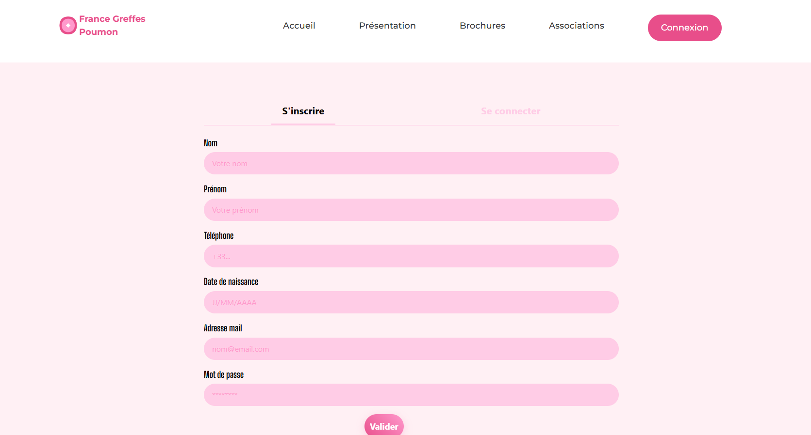
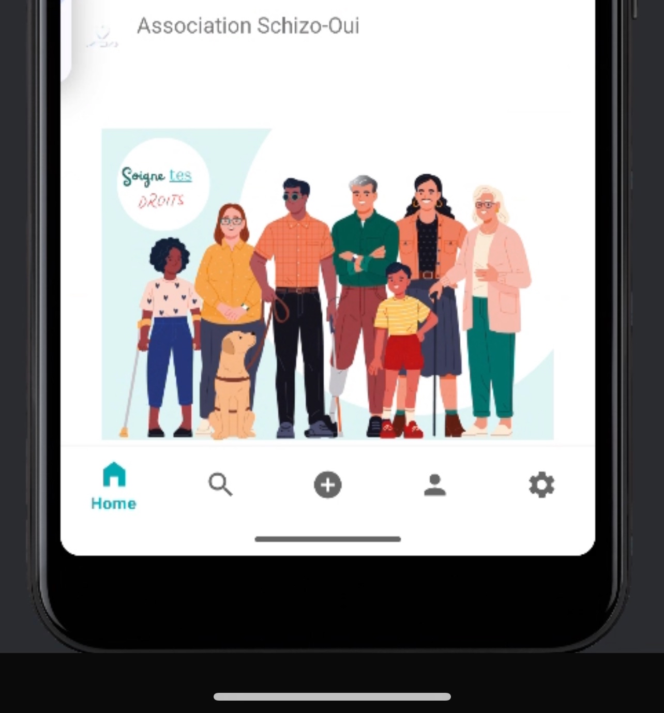
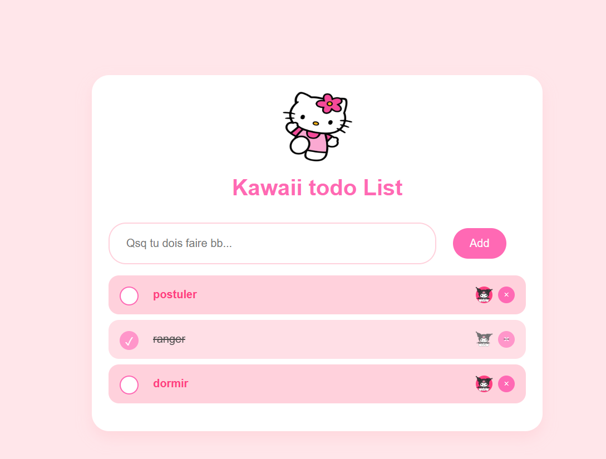

France Greffe Poumon
Site web pour sensibiliser à la greffe de poumon, avec un design intuitif.

France Assos Santé
Application mobile pour faciliter les dons à une association de santé.

ToDoList App
Une application simple et mignonne pour gérer ses tâches quotidiennes.